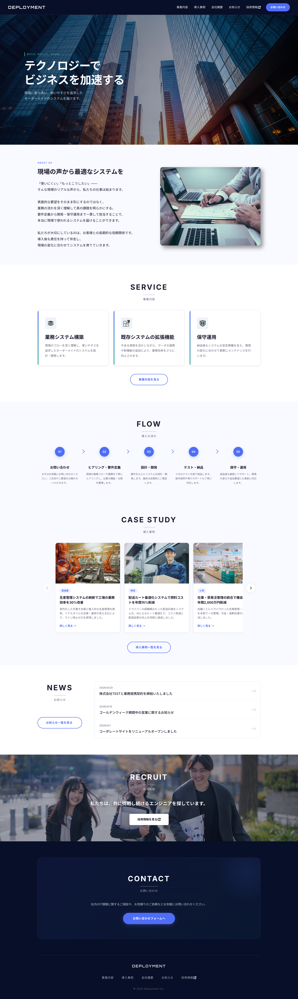


Deployment
架空IT企業のコーポレートサイト
https://intp-sun.site/wdex12/deployment_corp/



- 担当範囲
- デザイン・コーディング
- 使用ツール
- Figma / HTML / CSS / JavaScript / PHP
- 制作期間
- 約3週間
- 種別
- コーポレートサイト
01 目的と課題
「架空のIT企業のコーポレートサイトをリニューアルする」という設定で制作しました。旧サイトはレスポンシブ非対応でスマートフォンでの表示が崩れており、モバイルユーザーへの対応が課題でした。リニューアルにあたり、どのデバイスでも快適に閲覧・操作できるサイトを目標に制作しています。
02 工夫したこと
-
PHPインクルード＋JSONデータ管理
head・header・footerを共通パーツとして分離。導入事例とお知らせのデータはJSONで一元管理することでページ間の一貫性とメンテナンス性を高めました。 -
スライダーの端でボタンを非活性化
導入事例の横スクロールスライダーで、先頭・末尾に達したタイミングで矢印ボタンをdisabledにし、操作の限界を直感的に伝えました。 -
入力バリデーション付きお問い合わせフォーム
JSによるリアルタイムバリデーションとPHPによるサーバーサイド処理を組み合わせ、入力→確認→完了の3ステップで送信ミスを防ぐ設計にしました。 -
採用サイトのMVにアニメーションを導入
採用サイトLPのメインビジュアルにJavaScriptでアニメーションを実装し、印象的なファーストビューを演出しました。 -
採用サイトで募集停止の求人にクラスを付与して表示を切り替え
募集を停止した職種カードにis-closedクラスを付与し、タグの表示とエントリーボタンの非表示をCSSで制御しました。